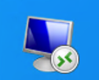
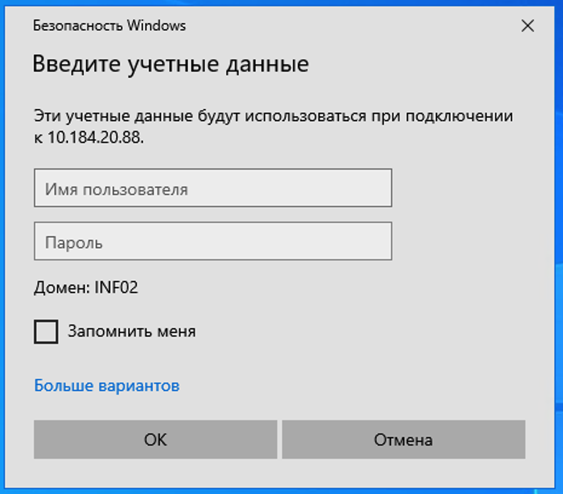

Локальный рабочий стол
- Это экран вашего компьютера сразу после входа в Windows.
- Именно здесь находятся обычные ярлыки и файлы вашего ПК.
- Ярлык удаленного рабочего стола нужно запускать отсюда.
Короткая инструкция для пользователей: где искать ярлык, как не перепутать локальный и удаленный рабочий стол и что вводить при первом входе.
Ярлык удаленного рабочего стола нужно искать на локальном рабочем столе вашего компьютера, а не внутри уже открытой удаленной сессии.
Большинство ошибок начинается с того, что пользователь уже находится в удаленной сессии и пытается искать ярлык там. Ниже короткое различие.

Ищите на локальном рабочем столе значок удаленного рабочего стола, похожий на изображение слева.
После нажатия на этот ярлык откроется окно ввода учетных данных для подключения.
После запуска ярлыка откроется окно входа. Ориентируйтесь на пример ниже.

В поле имени пользователя введите учетную запись в формате
inf.co.fi\пользователь.
Имя пользователя обычно подставляется автоматически. Проверьте его, введите пароль и нажмите OK.
Убедитесь, что вы находитесь на рабочем столе своего компьютера, а не в удаленной сессии.
Найдите значок удаленного рабочего стола и нажмите на него.
При первом входе используйте inf.co.fi\пользователь, затем введите пароль.